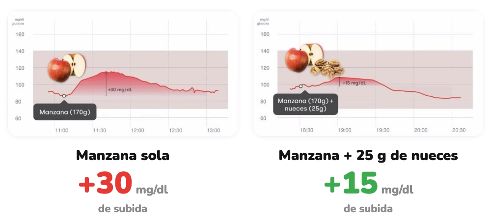

Cómo afecta
Misma manzana. Con o sin nueces.
Un puñado de nueces cambia la curva.
Desliza →
Hacemos visible lo invisible
Un puñado de nueces cambia la curva.
Desliza →

Curvas reales de un Viber. La respuesta puede variar entre personas.
Un puñado de frutos secos y tu curva será más suave.
Desliza →
glucovibes.com